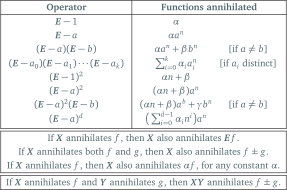

Design & Analysis: Algorithms
06: Annihilators
Outline of the lecture
- Annihilators
- Examples
- Transformations
Relative Ranking


Send me your private nicknames ASAP
annihilators
Solving Recurrences using Annihilators
Goal
- Recursion tree and Master method are good tools for solving many recurrences
- However these methods are limited
- They can’t help us get guesses for recurrences like $T(n) = T(n − 1) + T(n − 2)$ (the Fibonacci numbers )
- Annihilators will let us solve such recurrences
Intro to Annihilators
- Suppose we are given a sequence of numbers $A = < a_0, a_1, a_2, \dots >$
- This might be a sequence like the Fibonacci numbers
- I.e. $A = < a_0, a_1, a_2, \dots > = < T (1), T (2), T (3), \dots >$
Annihilator Operators
We define three basic operations we can perform on this sequence:
- Multiply the sequence by a constant: $cA = < ca_0, ca_1, ca_2, \dots >$
- Shift the sequence to the left: ${\bf L}A = < a_1, a_2, a_3, \dots >$
- Add two sequences: if $A = < a_0, a_1, a_2, \dots >$ and $B = < b_0, b_1, b_2, \dots >$, then $A + B = < a_0 + b_0, a_1 + b_1, a_2 + b_2, \dots >$
Everything to know about operators
| Operator | Definition |
|---|---|
| addition | $(f+g)(n) \colon= f(n) + g(n)$ |
| subtraction | $(f-g)(n) \colon= f(n) - g(n)$ |
| multiplication | $(\alpha \cdot f)(n) \colon= \alpha \cdot (f(n))$ |
| shift | $\bm{E}f(n) \colon= f(n+1)$ |
| k-fold shift | $\bm{E}^kf(n) \colon= f(n+k)$ |
| composition | $(\bm{X}+\bm{Y})f \colon= \bm{X}f+\bm{Y}f$ |
| $(\bm{X}-\bm{Y})f \colon= \bm{X}f-\bm{Y}f$ | |
| $\bm{XY}f \colon= \bm{X}(\bm{Y}f) = \bm{Y}(\bm{X}f)$ | |
| distribution | $\bm{X}(f+g)\colon=\bm{X}f+\bm{X}g$ |
Annihilator Description
- We first express our recurrence as a sequence $T$
- We use these three operators to “annihilate” $T$ , i.e. make it all $0$’s
- Key rule: can’t multiply by the constant $0$
- We can then determine the solution to the recurrence from the sequence of operations performed to annihilate $T$
Example (1/2)
- Consider the recurrence $T(n) = 2T(n − 1)$, $T (0) = 1$
- If we solve for the first few terms of this sequence, we can see they are $< 2^0, 2^1, 2^2, 2^3, \dots >$
- Thus this recurrence becomes the sequence: $$T = < 2^0, 2^1, 2^2, 2^3, \dots >$$
Example (2/2)
Let’s annihilate $T = < 2^0, 2^1, 2^2, 2^3, \dots >$
- Multiplying by a constant $c = 2$ gets: $2T = < 2 \times 2^0, 2 \times 2^1, 2 \times 2^2, 2 \times 2^3, \dots >$
- $2T = < 2^1, 2^2, 2^3, 2^4, \dots >$
- Shifting one place to the left gets ${\bf L}T = < 2^1, 2^2, 2^3, 2^4, \dots >$
- Adding the sequence ${\bf L}T$ and $−2T$ gives:
\begin{align} {\bf L}T − 2T & = < 2^1 − 2^1, 2^2 − 2^2, 2^3 − 2^3, \dots >\\ & = < 0, 0, 0, \dots > \end{align}
- The annihilator of $T$ is thus ${\bf L} − 2$
Distributive Property
- The distributive property holds for these three operators
- Thus can rewrite ${\bf L}T − 2T$ as $({\bf L} − 2)T$
- The operator $({\bf L} − 2)$ annihilates $T$ (makes it the sequence of all $0$’s)
- Thus $({\bf L} − 2)$ is called the annihilator of $T$
$0$, the “Forbidden Annihilator”
- Multiplication by $0$ will annihilate any sequence
- Thus we disallow multiplication by $0$ as an operation
- In particular, we disallow $(c−c) = 0$ for any $c$ as an annihilator
- Must always have at least one ${\bf L}$ operator in any annihilator!
Uniqueness
- An annihilator annihilates exactly one type of sequence
- In general, the annihilator ${\bf L} − c$ annihilates any sequence of the form $< a_0c^n >$
- If we find the annihilator, we can find the type of sequence, and thus solve the recurrence
- We will need to use the base case for the recurrence to solve for the constant $a_0$
Example
If we apply operator $({\bf L} − 3)$ to sequence $T$ above, it fails to
annihilate $T$
\begin{align}
({\bf L} − 3)T & \fragment{1}{= {\bf L}T + (-3)T}\\
& \fragment{2}{= < 2^1, 2^2, 2^3, \dots > + <-3\times 2^0, -3\times 2^1, \dots>}\\
& \fragment{3}{= < (2-3)\times 2^0, (2-3)\times 2^1, \dots >}\\
& \fragment{4}{= (2-3)T}\\
&\fragment{5}{= -T}
\end{align}
Example (II)
What does $({\bf L}−c)$ do to other sequences $A = < a_0d^n >$ when $< d \ne c >$:
\begin{align}
({\bf L} - c)A & \fragment{1}{= ({\bf L}-c) < a_0, a_0d, a_0d^2, a_0d^3,\dots >}\\
& \fragment{2}{= {\bf L}< a_0, a_0d, a_0d^2, a_0d^3,\dots > - c< a_0, a_0d, a_0d^2, a_0d^3,\dots >}\\
&\fragment{3}{= < a_0d, a_0d^2, a_0d^3,\dots > - < ca_0, a_0d, ca_0d^2, ca_0d^3,\dots >}\\
&\fragment{4}{= < a_0d - ca_0, a_0d^2 - ca_0d, a_0d^3 - ca_0d^2, \dots >}\\
&\fragment{5}{= <(d-c) a_0, (d -c) a_0 d, (d-c)a_0d^2, \dots >}\\
&\fragment{6}{= (d-c) < a_0, a_0d, a_0 d^2, a_0 d^3, \dots >}\\
&\fragment{7}{= (d-c)A}\\
\end{align}
Uniqueness
- The last example implies that an annihilator annihilates one type of sequence, but does not annihilate other types of sequences
- Thus Annihilators can help us classify sequences, and thereby solve recurrences
Lookup Table
Example
First, calculate the annihilator:
- Recurrence: $T (n) = 4 \times T (n − 1)$, $T (0) = 2$
- Sequence: $T = < 2, 2 \times 4, 2 \times 4^2, 2 \times 4^3, \cdots >$
- Calculate the annihilator:
- $\bm{E}T = < 2 \times 4, 2 \times 4^2, 2 \times 4^3, 2 \times 4^4, \cdots >$
- $4T = < 2 \times 4, 2 \times 4^2, 2 \times 4^3, 2 \times 4^4, \cdots >$
- Thus $\bm{E}T − 4T = < 0, 0, 0, \cdots >$
- And so $\bm{E} − 4$ is the annihilator
Example (II)
Now use the annihilator to solve the recurrence
- Look up the annihilator in the “Lookup Table”
- The annihilator $\bm{E} − 4$ annihilates any sequence of the form $< \alpha \cdot a^n >$
- Thus $T (n) = \alpha 4^n$, but what is $\alpha$?
- We know $T (0) = 2$, so $T (0) = \alpha \cdot 4^0 = 2$ and so $\alpha = 2$
- Thus $T (n) = 2 \cdot 4^n$
In Class Exercise 
Consider the recurrence $T (n) = 3 T (n − 1)$, $T (0) = 3$,
- Q1: Calculate $T (0)$,$T (1)$,$T (2)$ and $T (3)$ and write out the sequence $T$
- Q2: Calculate $\bm{L}T$, and use it to compute the annihilator of $T$
- Q3: Look up this annihilator in the lookup table to get the general solution of the recurrence for $T (n)$
- Q4: Now use the base case $T (0) = 3$ to solve for the constants in the general solution
Multiple Operators 1/2
- We can apply multiple operators to a sequence
- For example, we can multiply by the constant $c$ and then by the constant $d$ to get the operator $cd$
- We can also multiply by $c$ and then shift left to get $c\bm{L}T$ which is the same as $\bm{L}cT$
- We can also shift the sequence twice to the left to get $\bm{L}\bm{L}T$ which we’ll write in shorthand as $\bm{L}^2T$
Multiple Operators 2/2
- We can string operators together to annihilate more complicated sequences
- Consider: $T = < 2^0 + 3^0, 2^1 + 3^1, 2^2 + 3^2, \cdots >$
- We know that $(\bm{L}−2)$ annihilates the powers of $2$ while leaving the powers of $3$ essentially untouched
- Similarly, $(\bm{L} − 3)$ annihilates the powers of $3$ while leaving the powers of $2$ essentially untouched
- Thus if we apply both operators, we’ll see that $(\bm{L} − 2)(\bm{L} − 3)$ annihilates the sequence $T$
The Details
- Consider: $T = < a^0 + b^0, a^1 + b^1, a^2 + b^2, \cdots >$
- $\bm{L}T = < a^1 + b^1, a^2 + b^2, a^3 + b^3, \cdots >$
- $aT = < a^1 + a \cdot b^0, a^2 + a \cdot b^1, a^3 + a \cdot b^2, \cdots >$
- $\bm{L}T − aT = < (b − a) b^0, (b − a) b^1, (b − a) b^2, \cdots >$
- We know that $(\bm{L} − a)T$ annihilates the $a$ terms and multiplies the $b$ terms by $b − a$ (a constant)
- $(\bm{L} − a)T = < (b − a)b^0, (b − a)b^1, (b − a)b^2, \cdots >$
- And so $(\bm{L} − a)T$ is annihilated by $(\bm{L} − b)$
- Thus the annihilator of $T$ is $(\bm{L} − b)(\bm{L} − a)$
Key Point
- In general, the annihilator $(\bm{L} − a)(\bm{L} − b)$ (where $a \ne b$) will annihilate only all sequences of the form $< \alpha_1 a^n + \alpha_2 b^n >$
- We will often multiply out $(\bm{L} − a)(\bm{L} − b)$ to $\bm{L}^2 − (a + b)\bm{L} + ab$
- Left as an exercise to show that $(\bm{L} − a)(\bm{L} − b)T$ is the same as $(\bm{L}^2 − (a + b)\bm{L} + ab)T$
Lookup Table
Fibonacci Sequence
- We now know enough to solve the Fibonacci sequence
- Recall the Fibonacci recurrence is $T (0) = 0$, $T (1) = 1$, and $T (n) = T (n − 1) + T (n − 2)$
- Let $T_n$ be the $n^{th}$ element in the sequence
- Then we’ve got: \begin{align} T &= < T_0, T_1, T_2, T_3, \cdots >\\ \bm{L}T &= < T_1, T_2, T_3, T_4, \cdots >\\ \bm{L}^2T &= < T_2, T_3, T_4, T_5, \cdots >\\ \end{align}
- Thus $\bm{L}^2T − \bm{L}T − T = < 0, 0, 0, \cdots >$
- In other words, $\bm{L}^2 − \bm{L} − 1$ is an annihilator for $T$
Lookup Table
Factoring
- $\bm{L}^2 − \bm{L} − 1$ is an annihilator that is not in our lookup table
- However, we can factor this annihilator (using the quadratic formula) to get something similar to what’s in the lookup table
- $\bm{L}^2 - \bm{L} - 1 = (\bm{L} - \phi)(\bm{L} - \hat\phi)$, where $\phi = \frac{1+\sqrt{5}}{2}$ and $\hat\phi = \frac{1-\sqrt{5}}{2}$
Quadratic formula
High School Algebra Review:
- To factor something of the form $ax^2 + bx + c$, we use the Quadratic Formula:
- $ax^2 + bx + c$ factors into $(x - \phi)(x - \hat\phi)$, where: \begin{align} \phi & = \frac{-b+\sqrt{b^2 - 4 ac}}{2a}\\ \hat\phi & = \frac{-b-\sqrt{b^2 - 4 ac}}{2a}\\ \end{align}
Factoring
- To factor: $\bm{L}^2 − \bm{L} − 1$
- Rewrite: $1 \times \bm{L}^2 − 1 ∗ \bm{L} − 1$, $a = 1$, $b = −1$, $c = −1$
- From Quadratic Formula: $\phi = \frac{1+\sqrt{5}}{2}$ and $\hat\phi = \frac{1-\sqrt{5}}{2}$
- So $\bm{L}^2 − \bm{L} − 1$ factors to $(\bm{L} − \phi)(\bm{L} − \hat\phi)$
Back to Fibonacci
- Recall the Fibonacci recurrence is $T(0) = 0$, $T(1) = 1$, and $T (n) = T (n − 1) + T (n − 2)$
- We’ve shown the annihilator for $T$ is $(\bm{L} − \phi)(\bm{L} − \hat\phi)$, where $\phi = \frac{1+\sqrt{5}}{2}$ and $\hat\phi = \frac{1-\sqrt{5}}{2}$
- If we look this up in the “Lookup Table”, we see that the sequence $T$ must be of the form $< c_1 \phi^n + c_2 \hat\phi^n >$
- All we have left to do is solve for $c_1$ and $c_2$
- Can use the base cases to solve for these
Finding the Constants
- We know $T = < c_1 \phi^n + c_2\hat\phi^n >$, where $\phi = \frac{1+\sqrt{5}}{2}$ and $\hat\phi = \frac{1-\sqrt{5}}{2}$
- We know \begin{align} T (0) &= c_1 + c_2 = 0 \\ T (1) &= c_1 \phi + c_2\hat\phi = 1 \\ \end{align}
- We’ve got two equations and two unknowns
- Can solve to get $c_1 = \frac{1}{\sqrt{5}}$ and $c_2 = -\frac{1}{\sqrt{5}}$
The punchline
- Recall Fibonnaci recurrence: $T(0) = 0$, $T(1) = 1$, and $T(n) = T (n − 1) + T (n − 2)$
- The final explicit formula for $T(n)$ is thus: $$T(n) = \frac{1}{\sqrt{5}}(\frac{1+\sqrt{5}}{2})^n - \frac{1}{\sqrt{5}}(\frac{1-\sqrt{5}}{2})^n$$
Amazingly, $T(n)$ is always an integer, in spite of all of the square
roots in its formula.
the annihilators method
- Write down the annihilator for the recurrence
- Factor the annihilator
- Look up the factored annihilator in the “Lookup Table” to get general solution
- Solve for constants of the general solution by using initial conditions
Lookup Table
$$ (\bm{L} - a_0)^{b_0}(\bm{L} - a_1)^{b_1}\dots(\bm{L} - a_k)^{b_k} $$ (where $a_i\ne a_j$, for $i\ne j$) annihilates only sequences of the form: $$ < p_0(n)a_0^n + p_1(n)a_1^n + \dots p_k(n)a_k^n> $$ where $p_i(n)$ is a polynomial of degree $b_i - 1$Examples
$ (\bm{L} - a_0)^{b_0}(\bm{L} - a_1)^{b_1}\dots(\bm{L} - a_k)^{b_k}$
$ < p_0(n)a_0^n + p_1(n)a_1^n + \dots p_k(n)a_k^n> $
- Q: What does $(\bm{L} − 3)(\bm{L} − 2)(\bm{L} − 1)$ annihilate?
- A: $< c_01^n + c_12^n + c_23^n >$
- Q: What does $(\bm{L} − 3)^2(\bm{L} − 2)(\bm{L} − 1)$ annihilate?
- A: $< c_01^n + c_12^n + (c_2n + c_3)3^n >$
- Q: What does $(\bm{L} − 1)^4$ annihilate?
- A: $(c_0n^3 + c_1n^2 + c_2n + c_3)1^n$
- Q: What does $(\bm{L} − 1)^3(\bm{L} − 2)^2$ annihilate?
- A: $(c_0n^2 + c_1n + c_2)1^n + (c_3n + c_4)2^n$
Example 1
Consider the recurrence $T (n) = 2T (n − 1) − T (n − 2)$, $T (0) = 0$,
$T (1) = 1$. Note that:
\begin{align}
\bm{L}^2T &= < T_{n+2} >\\
& = < 2T_{n+1} - T_{n} >\\
\bm{L}T &= < T_{n+1} >\\
T & = < T_n >
\end{align}
- Thus $\bm{L}^2T − 2\bm{L}T + T = < 0 >$
- So $\bm{L}^2 − 2\bm{L} + 1$ is the annihilator of $T$
$T (n) = 2T (n − 1) − T (n − 2), T (0) = 0, T (1) = 1$
- Write down the annihilator: From the definition of the sequence, we can see that $\bm{L}^2T −2\bm{L}T +T = 0$, so the annihilator is $\bm{L}^2 − 2\bm{L} + 1$
- Factor the annihilator: We can factor by hand or using the quadratic formula to get $\bm{L}^2 − 2\bm{L} + 1 = (\bm{L} − 1)^2$
- Look up to get general solution: The annihilator $(\bm{L} − 1)^2$ annihilates sequences of the form $(c_0n + c_1)1^n$
- Solve for constants: $T (0) = 0 = c_1$, $T (1) = 1 = c_0 + c_1$, We’ve got two equations and two unknowns. Solving by hand, we get that $c_0 = 1$, $c_1 = 0$. Thus: $T (n) = n$
Example 2
Consider the recurrence $ T (n) = 7T (n − 1) − 16T (n − 2) + 12T (n −
3)$, $T (0) = 1$,
$T (1) = 5$, $T (2) = 17$. Note that:
\begin{align}
\bm{L}^3T &\fragment{1}{= < T_{n+3} >}\\
& \fragment{2}{= < 7T_{n+2} - 16T_{n+1} + 12T_{n} >}\\
\bm{L}^2T &\fragment{3}{= < T_{n+2} >}\\
\bm{L}T &\fragment{4}{= < T_{n+1} >}\\
T & \fragment{5}{= < T_n >}
\end{align}
- Thus $\bm{L}^3T -7\bm{L}^2T + 16\bm{L}T -12 T = < 0 >$
- So $\bm{L}^3 -7\bm{L}^2 + 16\bm{L} - 12$ is the annihilator of $T$
$ T (n) = 7T (n − 1) − 16T (n − 2) + 12T (n −
3)$, $T(0)=1$,
$T (1) = 5$, $T (2) = 17$.
- Write down the annihilator: From the definition of the sequence $\bm{L}^3T − 7\bm{L}^2T + 16\bm{L}T − 12T = 0$, so the annihilator is $\bm{L}3 − 7\bm{L}2 + 16\bm{L} − 12$
- Factor the annihilator: We can factor by hand or using a CAS $\bm{L}^3 −7\bm{L}^2 +16\bm{L}−12 = (\bm{L}−2)^2(\bm{L}−3)$
- Look up to get general solution: $(\bm{L} − 2)^2(\bm{L} − 3)$ annihilates sequences $< (c_0n + c_1)2^n+c_2 3^n >$
- Solve for constants: $T (0) = 1 = c_1 + c_2$, $T (1) = 5 = 2c_0 + 2c_1 + 3c_2$, $T (2) = 17 = 8c_0 + 4c_1 + 9c_2$. Three equations and three unknowns. Solving by hand, we get that $c_0 = 1$, $c_1 = 0$, $c_2 = 1$. Thus: $T (n) = n2^n + 3^n$
At Home Exercise
Consider the recurrence $T(n) = 6T (n − 1) − 9T (n − 2)$, $T (0) = 1$,
$T (1) = 6$
- Q1: What is the annihilator of this sequence?
- Q2: What is the factored version of the annihilator?
- Q3: What is the general solution for the recurrence?
- Q4: What are the constants in this general solution?
(Note: You can check that your general solution works for $T(2)$)
Assigned reading